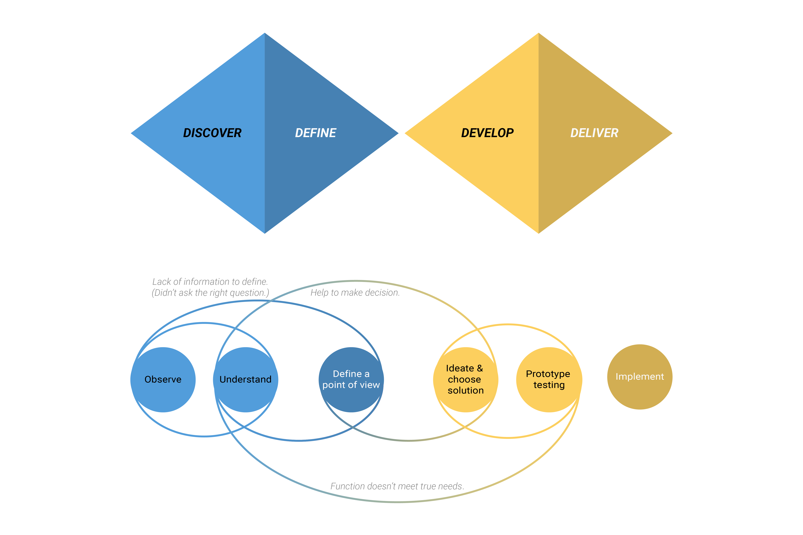

How it works
遊客在抵達台南之前，在APP中挑選理想的套裝行程。完成租借Tbike後，開啟APP，APP將會依照選取的套裝行程開始導航，依據內定的景點，同步提供店家資訊、優惠等等。旅程結束後，APP將顯示使用者今日的旅程地圖，使其可以儲存於個人帳戶中、與朋友分享，或是在互動圈提供更多資訊者給其他使用者們。
Design Thinking (4D)
Discover (Empathy)
Site Investigations
執行專案的第一步，我們到了Tbike站點瞭解機台的的基本架設與自行車的狀態，並學習如何完成整個租借自行車的流程。之後便在站點觀察新使用者會在什麼狀況下使用本系統、如何學習操作與在什麼狀況下發生挫折感等。
Interview
[ 方法 Method : 在四個不同的時段(早、中、午、晚)，平日或假日，不同的站點(大致分市中心、市中心外圍與觀光點)，做直擊訪談。]
對於熟悉的使用者，我們詢問使用頻率、會使用的情境、使用原因、使用習慣等等問題；若使用者為新手，則會著重在初始註冊的過程、透過什麼管道得知Tbike，與未來使用願意。
訪談的過程中會請他們講述從決定使用Tbike到結束使用Tbike整個流程，透過間接的方式了解整個顧客旅程。同時，讓他們熟悉系統，並引導他們說出Tbike可以改善或保留的地方。
Arrange data
資料中共有三類的使用者：台南通勤市民、外縣通勤市民、遊客。每類的使用者都有自己的問題，如台南通勤市民常遇到上下班尖峰時段單車缺乏的問題；外縣通勤市民希望站點設置能在他們理想的位置上；觀光客則有常不知道站點在哪裡的困擾等等。
Define
Persona & Scenario
起初，我們做了三類使用者的人物誌與情境，然而問題種類太多樣，有硬體問題與使用性行習慣等問題。於是進行了第一次收斂，將我們想要解決的使用者訂為「遊客」。其中一個原因是遊客為台南市政府推行Tbike的主要客群之一，同時，也希望開發的內容能結合、運用台南本地資源，甚至推廣台南。
情境的製作不僅能幫助從文字內容轉為具體的畫面，使我們對於使用者面對的情境更能感同身受；也讓我們在與團隊或同儕溝通中時，能更有效率的傳達使用者所面臨的狀況。
POV
Users need to be able to receive more information of how to travel around Tainan because they have no idea of connections between destinations.